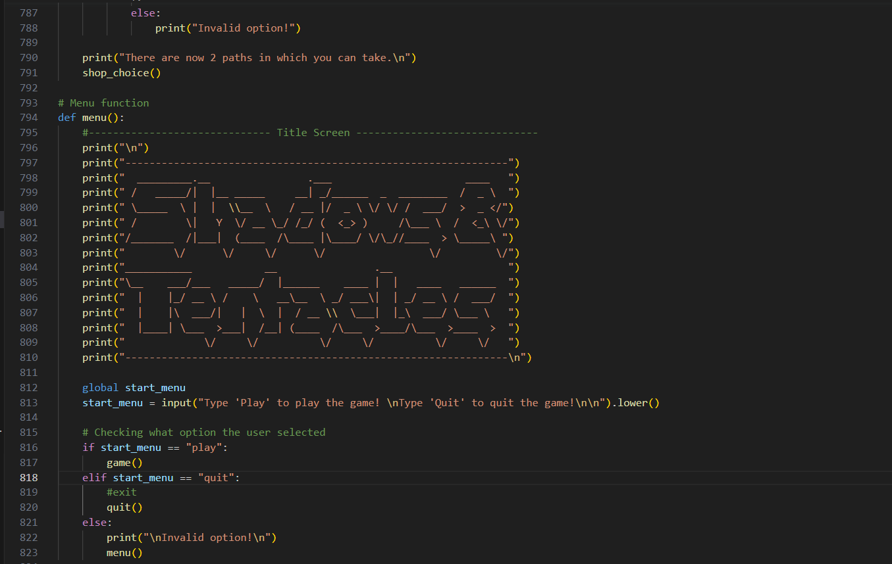
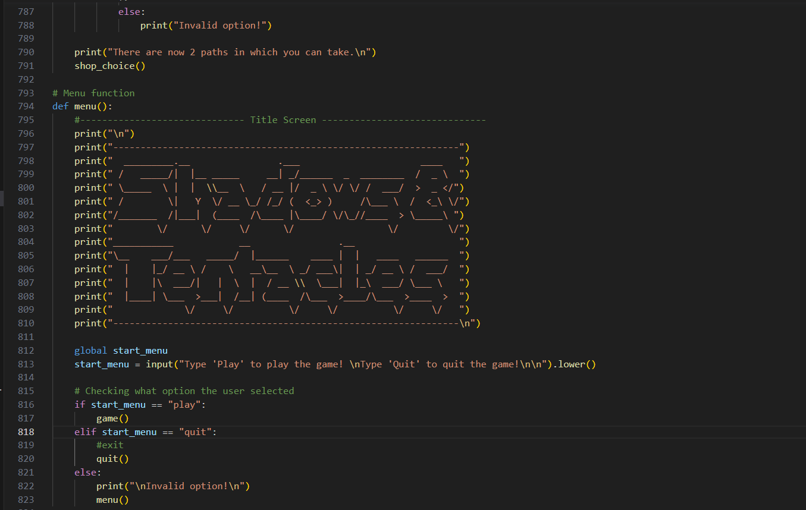
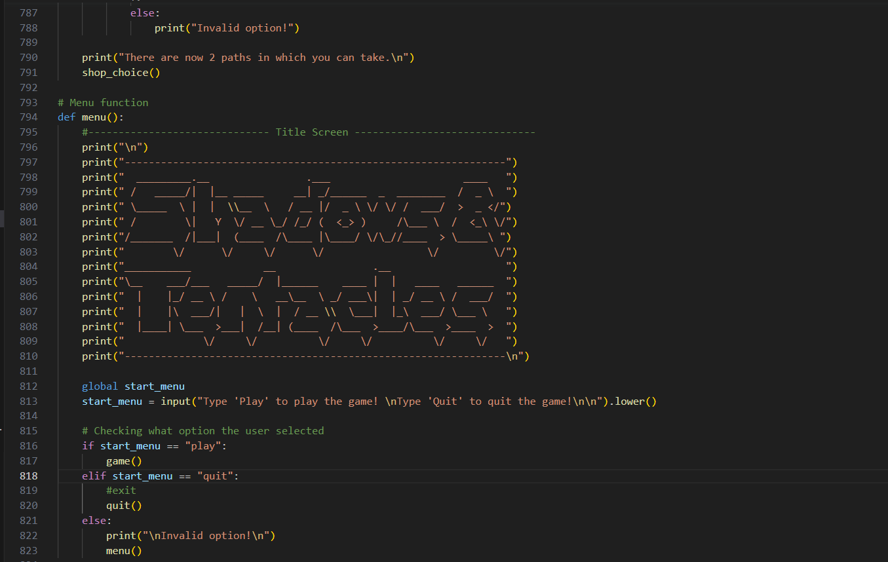

Hello! My name is Lee, and I'm a passionate gamer and coding enthusiast. I love exploring the vast worlds of video games and bringing my ideas to life through coding. In addition, I'm a huge fan of the TV shows such as Game of Thrones. In my gaming community i am mainly known as Xenokrypt, hence the name of the website, or other funny nicknames sometimes. I have decided to create this website and share a little bit about myself. Check out some screenshots of my interests down below!
